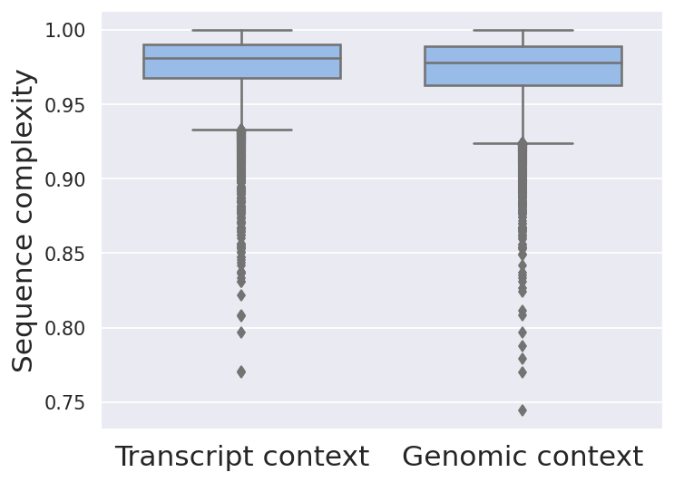
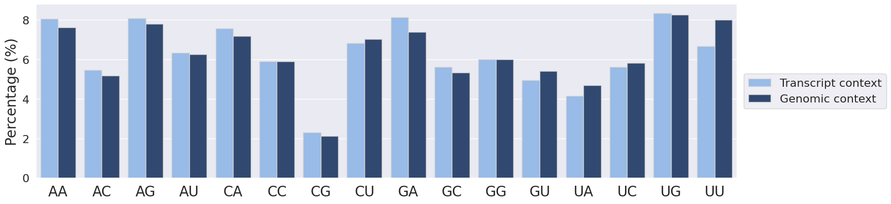

List of available statistics to compare sites containing genomic context with sites containing transcript context, generated by clipcontext g2t:
Table: Context set statistics regarding sequence lengths (min, max, mean, and median length) in nucleotides (nt), sequence complexity (mean Shannon entropy over all sequences in the set) and nucleotide contents (A, C, G, U).
| Attribute | Transcript context | Genomic context |
|---|---|---|
| # sites | 12667 | 12667 |
| min site length | 56 | 101 |
| max site length | 101 | 101 |
| mean site length | 100.9 | 101.0 |
| median site length | 101 | 101 |
| mean complexity | 0.976 | 0.973 |
| %A | 27.94 | 26.86 |
| %C | 22.57 | 22.22 |
| %G | 24.72 | 24.16 |
| %U | 24.78 | 26.77 |
The Shannon entropy is calculated for each sequence to measure its information content (i.e., its complexity). A sequence with equal amounts of all four nucleotides has an entropy value of 1.0 (highest possible). A sequence with equal amounts of two nucleotides has an entropy value of 0.5. Finally, the lowest possible entropy is achieved by a sequence which contains only one type of nucleotide. Find the formula used to compute Shannon's entropy here (see CE formula).

Figure: Sequence complexity (Shannon entropy computed for each sequence) distributions for the genomic and transcript context set.
Di-nucleotide percentages are shown for the genomic and transcript context dataset.

Figure: Di-nucleotide percentages for the the genomic and transcript context dataset.
Table: Top 10 3-mers for the genomic and transcript context set and their percentages in the respective sequence set. In case of uniform distribution with all 3-mers present, each 3-mer would have a percentage = 1.5625.
| Rank | Transcript context | Genomic context |
|---|---|---|
| 1 | AGA (2.81 %) | UUU (2.84 %) |
| 2 | CAG (2.67 %) | CAG (2.59 %) |
| 3 | GAA (2.64 %) | AGA (2.52 %) |
| 4 | CUG (2.52 %) | CUG (2.46 %) |
| 5 | AAG (2.51 %) | GAA (2.34 %) |
| 6 | AAA (2.46 %) | AAG (2.33 %) |
| 7 | UGA (2.41 %) | AAA (2.30 %) |
| 8 | UGG (2.32 %) | UGA (2.30 %) |
| 9 | GGA (2.27 %) | UGG (2.21 %) |
| 10 | AUG (2.19 %) | AUG (2.04 %) |
| ... | ||
| # distinct k-mers | 64 (100.00 %) | 64 (100.00 %) |
Table: Top 10 4-mers for the genomic and transcript context set and their percentages in the respective sequence set. In case of uniform distribution with all 4-mers present, each 4-mer would have a percentage = 0.390625.
| Rank | Transcript context | Genomic context |
|---|---|---|
| 1 | AGAA (0.990 %) | UUUU (1.010 %) |
| 2 | AAGA (0.976 %) | AGAA (0.874 %) |
| 3 | GAAG (0.969 %) | AAGA (0.843 %) |
| 4 | UGGA (0.879 %) | GAAG (0.836 %) |
| 5 | CAGA (0.844 %) | UGGA (0.772 %) |
| 6 | UGAA (0.809 %) | CAGA (0.764 %) |
| 7 | AGGA (0.779 %) | UGAA (0.730 %) |
| 8 | GCUG (0.772 %) | GCUG (0.722 %) |
| 9 | GAAA (0.766 %) | UUUG (0.701 %) |
| 10 | AAAA (0.746 %) | AAAA (0.700 %) |
| ... | ||
| # distinct k-mers | 256 (100.00 %) | 256 (100.00 %) |
Table: Top 10 5-mers for the genomic and transcript context set and their percentages in the respective sequence set. In case of uniform distribution with all 5-mers present, each 5-mer would have a percentage = 0.09765625.
| Rank | Transcript context | Genomic context |
|---|---|---|
| 1 | GAAGA (0.4129 %) | UUUUU (0.3674 %) |
| 2 | AAGAA (0.3679 %) | GAAGA (0.3458 %) |
| 3 | AGAAG (0.3592 %) | AAGAA (0.3186 %) |
| 4 | UGAAG (0.3242 %) | AGAAG (0.3085 %) |
| 5 | AGAAA (0.2946 %) | UGAAG (0.2828 %) |
| 6 | UGCUG (0.2936 %) | UGCUG (0.2700 %) |
| 7 | UGGAG (0.2890 %) | AGAAA (0.2608 %) |
| 8 | GAGGA (0.2765 %) | UGGAG (0.2527 %) |
| 9 | GAUGA (0.2740 %) | AUUUU (0.2494 %) |
| 10 | AAAGA (0.2704 %) | UGCAG (0.2457 %) |
| ... | ||
| # distinct k-mers | 1024 (100.00 %) | 1024 (100.00 %) |
Table: Target gene biotype counts for transcript context sites and their percentages (count normalized by total count for the respective gene biotype).
| Gene biotype | Target count | Total count | Percentage |
|---|---|---|---|
| protein_coding | 2562 | 19968 | 12.83 % |
| snoRNA | 10 | 942 | 1.06 % |
| misc_RNA | 6 | 2220 | 0.27 % |
| lncRNA | 6 | 16880 | 0.04 % |
| rRNA_pseudogene | 5 | 499 | 1.00 % |
| polymorphic_pseudogene | 2 | 55 | 3.64 % |
| miRNA | 1 | 1879 | 0.05 % |
| unprocessed_pseudogene | 1 | 2627 | 0.04 % |
| scaRNA | 1 | 49 | 2.04 % |
Table: Site overlap statistics, showing the top 20 targeted regions (transcripts and corresponding genes), with the # overlaps == # of transcript context sites overlapping with the region.
| # overlaps | Transcript ID | Transcript biotype | Gene ID | Gene name | Gene biotype |
|---|---|---|---|---|---|
| 120 | ENST00000375254 | protein_coding | ENSG00000127481 | UBR4 | protein_coding |
| 75 | ENST00000314191 | protein_coding | ENSG00000253729 | PRKDC | protein_coding |
| 65 | ENST00000369850 | protein_coding | ENSG00000196924 | FLNA | protein_coding |
| 58 | ENST00000262854 | protein_coding | ENSG00000086758 | HUWE1 | protein_coding |
| 55 | ENST00000269122 | protein_coding | ENSG00000141367 | CLTC | protein_coding |
| 55 | ENST00000582970 | protein_coding | ENSG00000173821 | RNF213 | protein_coding |
| 53 | ENST00000261609 | protein_coding | ENSG00000128731 | HERC2 | protein_coding |
| 49 | ENST00000304992 | protein_coding | ENSG00000174231 | PRPF8 | protein_coding |
| 47 | ENST00000446231 | protein_coding | ENSG00000157106 | SMG1 | protein_coding |
| 46 | ENST00000323853 | protein_coding | ENSG00000144028 | SNRNP200 | protein_coding |
| 46 | ENST00000398571 | protein_coding | ENSG00000115464 | USP34 | protein_coding |
| 45 | ENST00000378308 | protein_coding | ENSG00000124486 | USP9X | protein_coding |
| 44 | ENST00000377560 | protein_coding | ENSG00000173064 | HECTD4 | protein_coding |
| 43 | ENST00000360184 | protein_coding | ENSG00000197102 | DYNC1H1 | protein_coding |
| 43 | ENST00000314888 | protein_coding | ENSG00000137076 | TLN1 | protein_coding |
| 41 | ENST00000358273 | protein_coding | ENSG00000196712 | NF1 | protein_coding |
| 40 | ENST00000317147 | protein_coding | ENSG00000125107 | CNOT1 | protein_coding |
| 39 | ENST00000325083 | protein_coding | ENSG00000078674 | PCM1 | protein_coding |
| 38 | ENST00000342981 | protein_coding | ENSG00000114867 | EIF4G1 | protein_coding |
| 37 | ENST00000421745 | protein_coding | ENSG00000115760 | BIRC6 | protein_coding |
| ... |